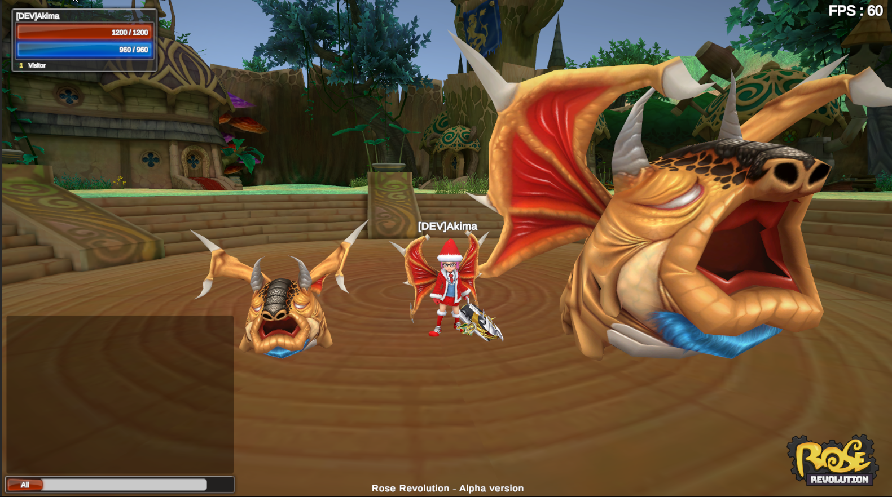
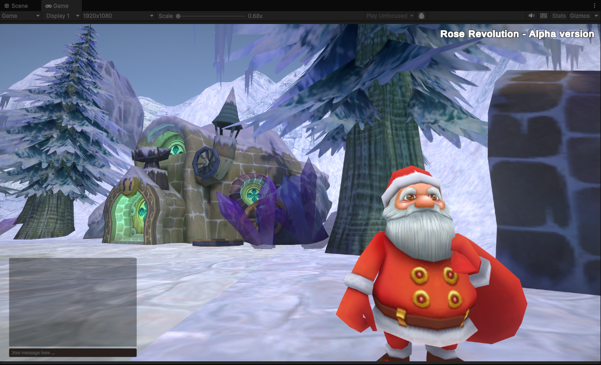
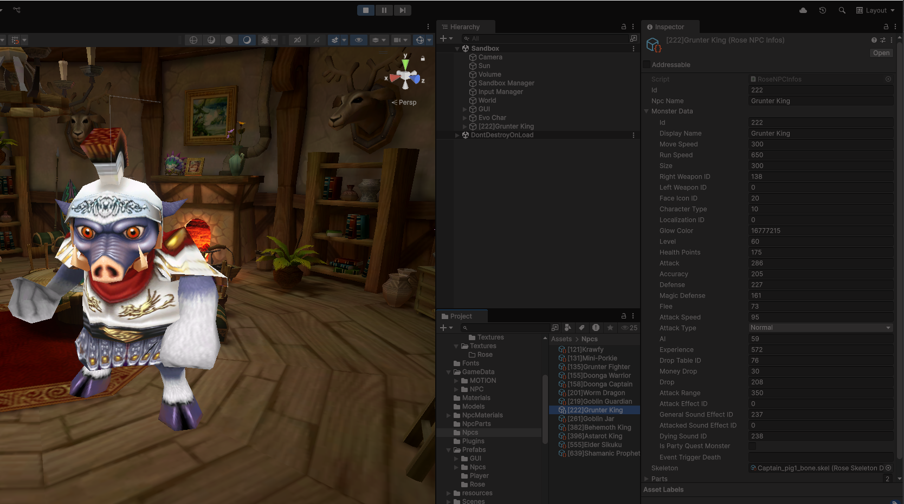
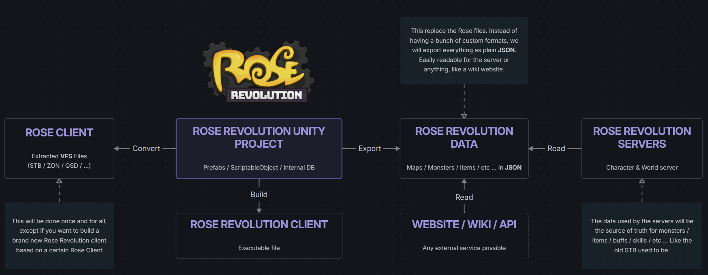

Rose Revolution
A fan-made reimagining of ROSE Online, rebuilt from the ground up in Unity.
Rose Online's files are converted once into modern, human-readable data (JSON), powering a brand new Unity client, dedicated servers, and any external service like a wiki or API. Follow the progress on the dev blog, contribute on GitHub, or grab the tools below.
Links of Rose Revolution
Server repository
The Character & World servers powering the game.
GitHubClient repository
The Unity client project - prefabs, ScriptableObjects and internal DB.
GitHubRoadmap & Bugtracker
Follow what's planned, in progress, and
report bugs. GitHubDev Blog
Progress updates
along with many technical details. WebsiteTechnical stuff
Uncompressed 3DDATA
The full ROSE Online 3DDATA archive, uncompressed, with fixed textures.
Google DriveRose Online Tools
A community collection of tools for working with ROSE Online files.
MegaModern Rose GUI assets
Modernized GUI assets for the Rose Revolution client.
Google DriveFile Format data structures
Documentation of every ROSE Online file format (STB, ZON, QSD, …).
WebsiteGallery




Guide - How to add a Packet
In Rose Revolution, we use our own packet architecture, but it is quite simple actually. In this example, I'll show how to create a new packet that will be sent by the client, received by the server, and how it will respond and be handled.
1 Add a Server and / or Client Command packet
This part is skippable because you can use an integer directly in every method / class, but it's better to follow a good well-structured code (though it's good for fast testing).
In the Server repo, there is a project named RevolutionShared. It's basically what will
be common between the server and the client, so that's why we put our commands here.
In Commands.cs you can find ClientCommands and ServerCommands classes
this is where we will put the new commands:
public enum ClientCommands: short
{
Ping = 0x998,
Pong = 0x999,
[....]
SendNewCommand = 0x9999 // ID doesn't matter, and the server
// will tell you if it's already in use
}
public enum ServerCommands : short
{
Ping = 0x998,
Pong = 0x999,
[....]
ResponseNewCommand = 0x9999
}
Now compile this project only, and update the DLL file in the client: Assets/Plugins.
2 Create & send the Client packet
Go in Unity, open the PacketHandler.Packets.cs script and add your packet to the Packets class:
public static PacketOut NewCommand()
{
PacketOut packet = new PacketOut(ClientCommands.SendNewCommand);
packet.Add("Hello !"); // Put whatever you want in the packet,
// Add method supports almost everything
packet.Add(1234);
return packet;
}
Now you can send it anywhere you want, just like that:
Client.Instance.SendPacket(Packets.NewCommand());3 Create the Packet Action & response packet
Now head in the correct server project (Login / Game / World) and browse the
[Server]PacketHandler.cs file. In the Packets class, we put the new one:
public static PacketOut ResponseNewCommand()
{
PacketOut packet = new PacketOut(ServerCommands.ResponseNewCommand);
packet.Add("This is from the server");
return packet;
}
Now that we created the packet, we have to create the Packet Action - don't worry,
it's very simple. In the [Server]PacketHandler class we add this method:
[PacketCommand(ClientCommands.SendNewCommand)]
public async Task NewCommandAction(SandboxClient client, PacketIn packet)
{
var stringValue = packet.GetString();
var intValue = packet.GetInt();
// Do whatever you want, like database stuff ...
await server.SendPacket(client, Packets.ResponseNewCommand()); // Send the response
}
Did you notice the attribute of the method? It is how everything is linked! The server knows that if it receives a packet with this command from a client, it should run this specific method.
4 Create the Packet Action and the Packet Event in the client
Head back to Unity - now we want to handle the server response. BUT this time, the packet
action is optional. We could add one in the PacketHandler class just like the server
one, but in this case we don't need to. Instead we want to trigger something in Unity,
that's why we need a Packet Event.
Now go anywhere you want and just add this:
[PacketEvent(ServerCommands.ResponseNewCommand)]
private void NewCommandReponse(Client client, PacketIn packet)
{
var serverResponse = packet.GetString();
// Do whatever you want, like displaying the server response
}
Wait a minute, that's it? Only that, anywhere?
Yes, anywhere you want! Most stuff happens in the background - just make sure you add the attribute and respect the method structure, and voilà!